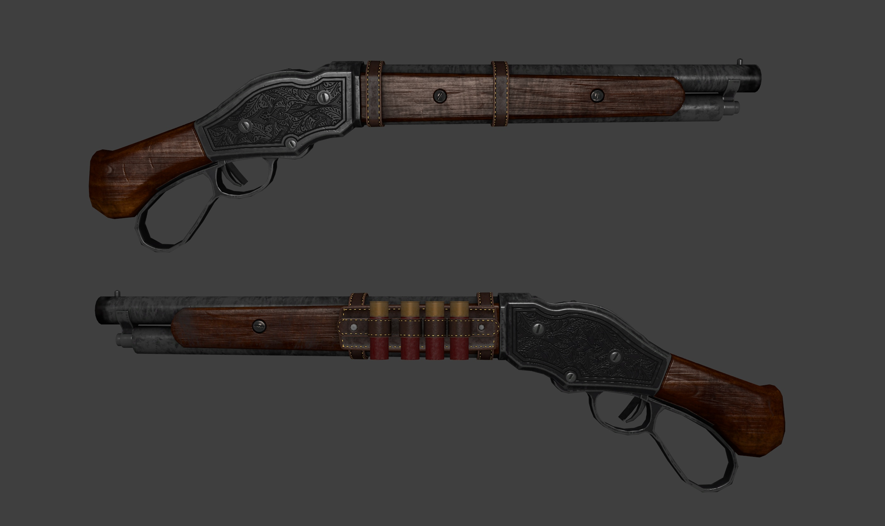

Volver

- Peso: 3,6 kg.
- Longitud: 997 mm.
- Longitud del cañón: 508 mm.
- Municion: Cartucho del 12 o 10.
- Sistema de disparo: accion de palanca.
- Cargador: depósito tubular, con capacidad de 5 cartuchos.
- calibre: 12 (18,53 mm) 10 (19,69 mm)
Añadir al carrito